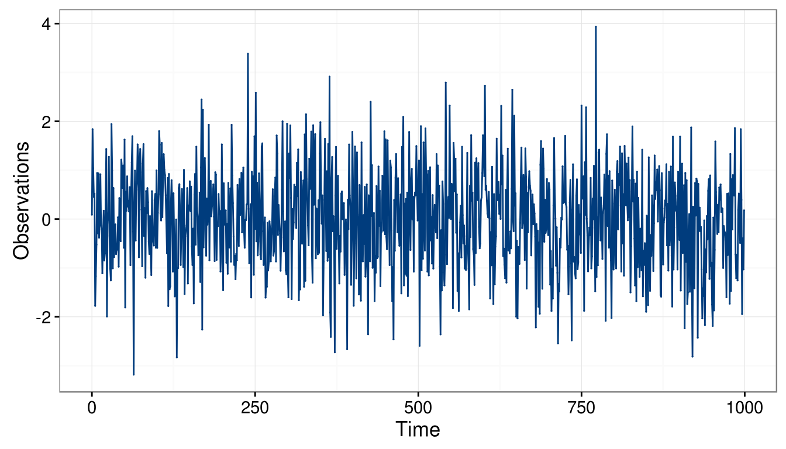
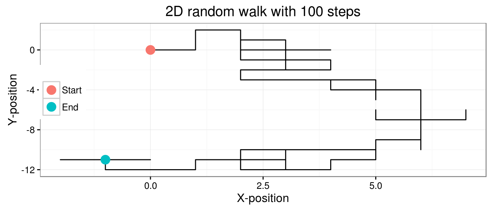
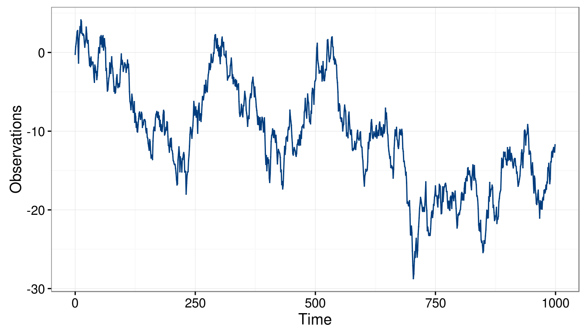
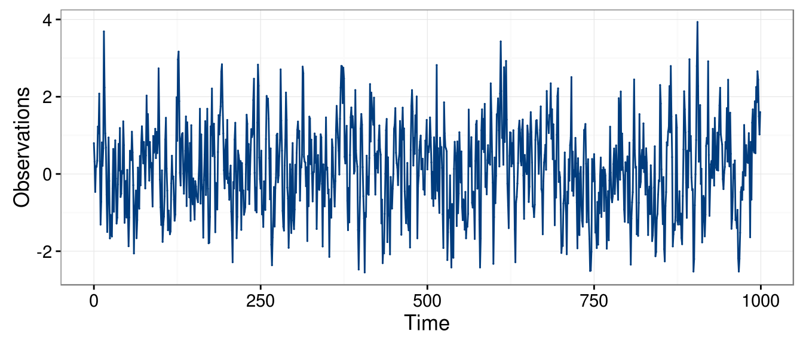
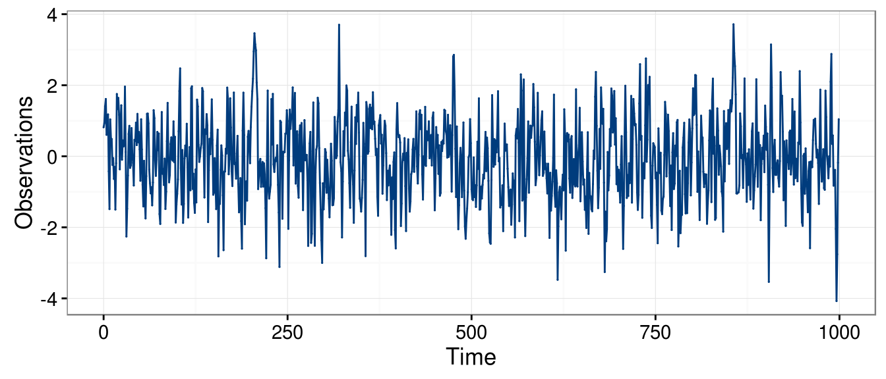
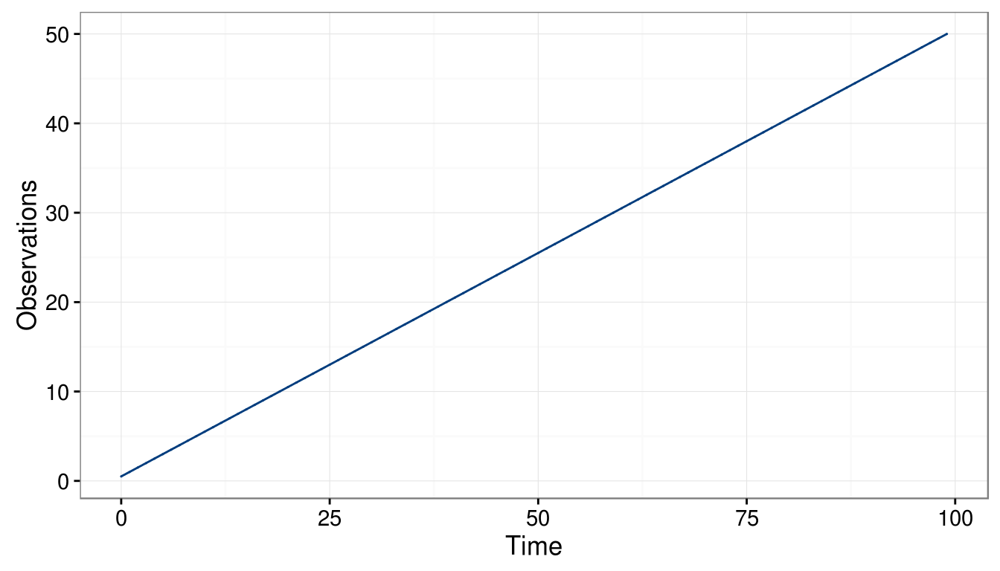

1.3 Basic Time Series Models
In this section, we introduce some simple time series models. Before doing so it is useful to define \(\Omega_t\) as all the information avaiable up to time \(t-1\), i.e.
\[\Omega_t = \left(X_{t-1}, X_{t-2}, ..., X_0 \right).\]
As we will see this compact notation is quite useful.
1.3.1 White noise processes
The building block for most time series models is the Gaussian white noise process, which can be defined as
\[{W_t}\mathop \sim \limits^{iid} N\left( {0,\sigma _w^2} \right).\]
This definition implies that:
- \(E[W_t | \Omega_t] = 0\) for all \(t\),
- \(\cov\left(W_t, W_{t-h} \right) = \boldsymbol{1}_{h = 0} \; \sigma^2\) for all \(t, h\).
Therefore, in this process there is an absence of temporal (or serial) dependence and is homoskedastic (i.e it has a constant variance). This definition can be generalized into two sorts of processes, the weak and strong white noise. The process \((W_t)\) is a weak white noise if
- \(E[W_t] = 0\) for all \(t\),
- \(\var\left(W_t\right) = \sigma^2\) for all \(t\),
- \(\cov \left(W_t, W_{t-h}\right) = 0\), for all \(t\), and for all \(h \neq 0\).
Note that this definition does not imply that \(W_t\) and \(W_{t-h}\) are independent (for \(h \neq 0\)) but simply uncorrelated. However, the notion of independence is used to define a strong white noise as
- \(E[W_t] = 0\) and \(\var(W_t) = \sigma^2 < \infty\), for all \(t\),
- \(F(W_t) = F(W_{t-h})\), for all \(t,h\) (where \(F(W_t)\) denotes the distribution of \(W_t\)),
- \(W_t\) and \(W_{t-h}\) are independent for all \(t\) and for all \(h \neq 0\).
It is clear from these definitions that if a process is a strong white noise it is also a weak white noise. However, the converse is not true as shown in the following example:
Example 1.6 Let \(Y_t \mathop \sim F_{t+2}\), where \(F_{t+2}\) denotes a Student distribution with \(t+2\) degrees of freedom. Assuming the sequence \((Y_1, \ldots, Y_n)\) to be independent, we let \(X_t = \sqrt{\frac{t}{t+2}} Y_t\). Then, the process \((X_t)\) is obviously not a strong white noise as the distribution of \(X_t\) changes with \(t\). However, this process is a weak white noise since we have:
- \(E[X_t] = \sqrt{\frac{t}{t+2}} E[Y_t] = 0\) for all \(t\).
- \(\var(X_t) = \frac{t}{t+2} \var(Y_t) = \frac{t}{t+2} \frac{t+2}{t} = 1\) for all \(t\).
- \(\cov(X_t, X_{t+h}) = 0\) (by independence), for all \(t\), and for all \(h \neq 0\).
The code below presents an example of how to simulate a Gaussian white noise process
# This code simulates a gaussian white noise process
n = 1000 # process length
sigma2 = 1 # process variance
Xt = gen.gts(WN(sigma2 = sigma2), N = n)
plot(Xt)
1.3.2 Random Walk Processes
The term random walk was first introduce by Karl Pearson in the early 19 hundreds. As for the white noise, there exist a large range of random walk processes. For example, one of the simplest forms of random walk can be explained as follows: suppose that you are walking on campus and your next step can either be to your left, your right, forward or backward (each with equal probability). Two realizations of such processes are represented below:
library("gridExtra")
# Function computes direction random walk moves
RW2dimension = function(steps = 100){
# Initial matrix
step_direction = matrix(0, steps+1, 2)
# Start random walk
for (i in seq(2, steps+1)){
# Draw a random number from U(0,1)
rn = runif(1)
# Go right if rn \in [0,0.25)
if (rn < 0.25) {step_direction[i,1] = 1}
# Go left if rn \in [0.25,0.5)
if (rn >= 0.25 && rn < 0.5) {step_direction[i,1] = -1}
# Go forward if rn \in [0.5,0.75)
if (rn >= 0.5 && rn < 0.75) {step_direction[i,2] = 1}
# Go backward if rn \in [0.75,1]
if (rn >= 0.75) {step_direction[i,2] = -1}
}
# Cumulative steps
position = data.frame(x = cumsum(step_direction[, 1]), y = cumsum(step_direction[, 2]))
# Mark start and stop locations
start_stop = data.frame(x = c(0, position[steps+1, 1]), y = c(0, position[steps+1, 2]),
type = factor(c("Start","End"), levels = c("Start","End")))
# Plot results
ggplot(mapping = aes(x = x, y = y)) + geom_path(data = position) +
geom_point(data = start_stop, aes(color = type), size = 4) +
theme_bw() + labs(x = "X-position", y = "Y-position",
title = paste("2D random walk with", steps, "steps"),
color = "") + theme(legend.position = c(0.15, 0.84))
}
# Plot 2D random walk with 10^2 and 10^5 steps
set.seed(5)
a = RW2dimension(steps = 10^2)
b = RW2dimension(steps = 10^4)
grid.arrange(a, b, nrow = 1)
Such processes inspired Karl Pearson’s famous quote that
“the most likely place to find a drunken walker is somewhere near his starting point.”
Empirical evidence of this phenomenon is not too hard to find on a Friday night in Champaign. In this text, we only consider one very specific form of random walk, namely the Gaussian random walk which can be defined as:
\[X_t = X_{t-1} + W_t,\]
where \(W_t\) is a Gaussian white noise and with initial condition \(X_0 = c\) (typically \(c = 0\)). This process can be expressed differently by backsubstitution as follows:
\[\begin{aligned} {X_t} &= {X_{t - 1}} + {W_t} \\ &= \left( {{X_{t - 2}} + {W_{t - 1}}} \right) + {W_t} \\ &= \vdots \\ {X_t} &= \sum\limits_{i = 1}^t {{W_i}} + X_0 = \sum\limits_{i = 1}^t {{W_i}} + c \\ \end{aligned} \]
The code below presents an example of how to simulate a such process
# This code simulates a gaussian random walk process
n = 1000 # process length
gamma2 = 1 # innovation variance
Xt = gen.gts(RW(gamma2 = gamma2), N = n)
plot(Xt)
1.3.3 Autoregressive Process of Order 1
An autoregressive process of order 1 or AR(1) is a generalization of both the white noise and random walk processes which are both themselves special cases of an AR(1). A (Gaussian) AR(1) process can be defined as
\[{X_t} = {\phi}{X_{t - 1}} + {W_t},\]
where \(W_t\) is a Gaussian white noise. Clearly, an AR(1) with \(\phi = 0\) is a Gaussian white noise and when \(\phi = 1\) the process becomes a random walk.
Remark. We generally assume that an AR(1), as well as other time series models, have zero mean. The reason for this assumption is only to simplfy the notation but it is easy to consider an AR(1) process around an arbitrary mean \(\mu\), i.e.
\[\left(X_t - \mu\right) = \phi \left(X_{t-1} - \mu \right) + W_t,\]
which is of course equivalent to
\[X_t = \left(1 - \phi \right) \mu + \phi X_{t-1} + W_t.\]
Thus, we will generally only work with zero mean processes since adding means is simple.Remark. An AR(1) is in fact a linear combination of the past realisations of the white noise \(W_t\). Indeed, we have
\[\begin{aligned} {X_t} &= {\phi_t}{X_{t - 1}} + {W_t} = {\phi}\left( {{\phi}{X_{t - 2}} + {W_{t - 1}}} \right) + {W_t} \\ &= \phi^2{X_{t - 2}} + {\phi}{W_{t - 1}} + {W_t} = {\phi^t}{X_0} + \sum\limits_{i = 0}^{t - 1} {\phi^i{W_{t - i}}}. \end{aligned}\]
Under the assumption of infinite past (i.e. \(t \in \mathbb{Z}\)) and \(|\phi| < 1\), we obtain
\[X_t = \sum\limits_{i = 0}^{\infty} {\phi^i {W_{t - i}}},\]
since \(\operatorname{lim}_{i \to \infty} \; {\phi^i}{X_{t-i}} = 0\).The code below presents an example of how an AR(1) can be simulated
# This code simulate a gaussian random walk process
n = 1000 # process length
phi = 0.5 # phi parameter
sigma2 = 1 # innovation variance
Xt = gen.gts(AR1(phi = phi, sigma2 = sigma2), N = n)
plot(Xt)
1.3.4 Moving Average Process of Order 1
As we have seen in the previous example, an AR(1) can be expressed as a linear combination of all past observations of \((W_t)\) while the next process, called a moving average process of order 1 or MA(1), is (in some sense) a “truncated” version of an AR(1). It is defined as
\begin{equation} X_t = \theta W_{t-1} + W_t, \end{equation}where (again) \(W_t\) denotes a Gaussian white noise process. An example on how to generate an MA(1) is given below:
# This code simulates a gaussian white noise process
n = 1000 # process length
sigma2 = 1 # innovation variance
theta = 0.5 # theta parameter
Xt = gen.gts(MA1(theta = theta, sigma2 = sigma2), N = n)
plot(Xt)
1.3.5 Linear Drift
A linear drift is a very simple deterministic time series model which can be expressed as
\[X_t = X_{t-1} + \omega, \]
where \(\omega\) is a constant and with the initial condition \(X_0 = c\), an arbitrary constant (typically zero). This process can be expressed in a more familiar form as follows:
\[ {X_t} = {X_{t - 1}} + \omega = \left( {{X_{t - 2}} + \omega} \right) + \omega = t{\omega} + c \]
Therefore, a (linear) drift corresponds to a simple linear model with slope \(\omega\) and intercept \(c\).
A drift can simply be generated using the code below:
# This code simulate a linear drift with 0 intercept
n = 100 # process length
omega = 0.5 # slope parameter
Xt = gen.gts(DR(omega = omega), N = n)
plot(Xt)